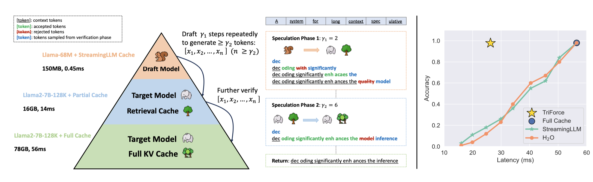
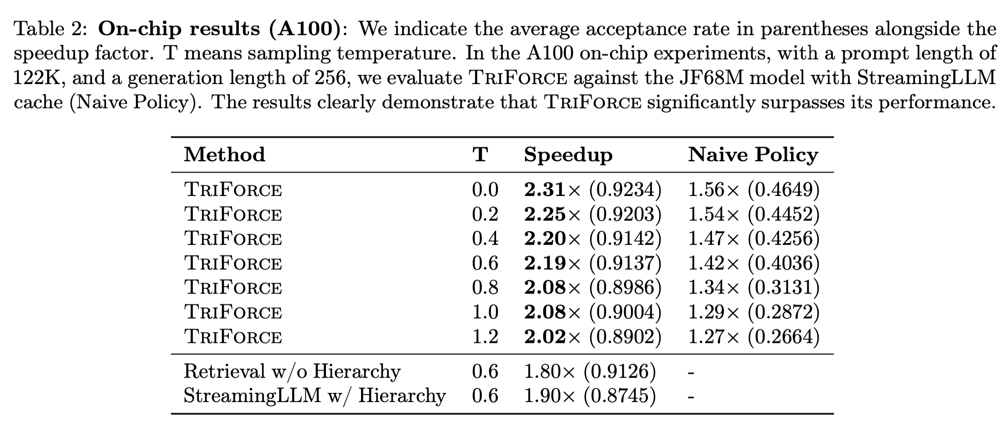
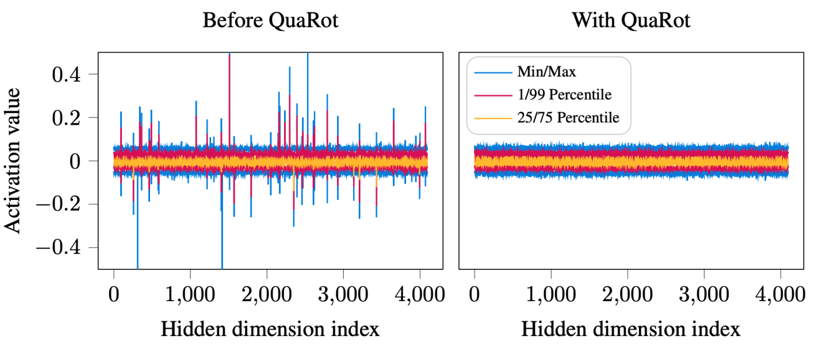
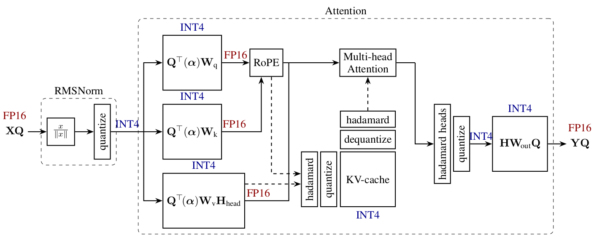
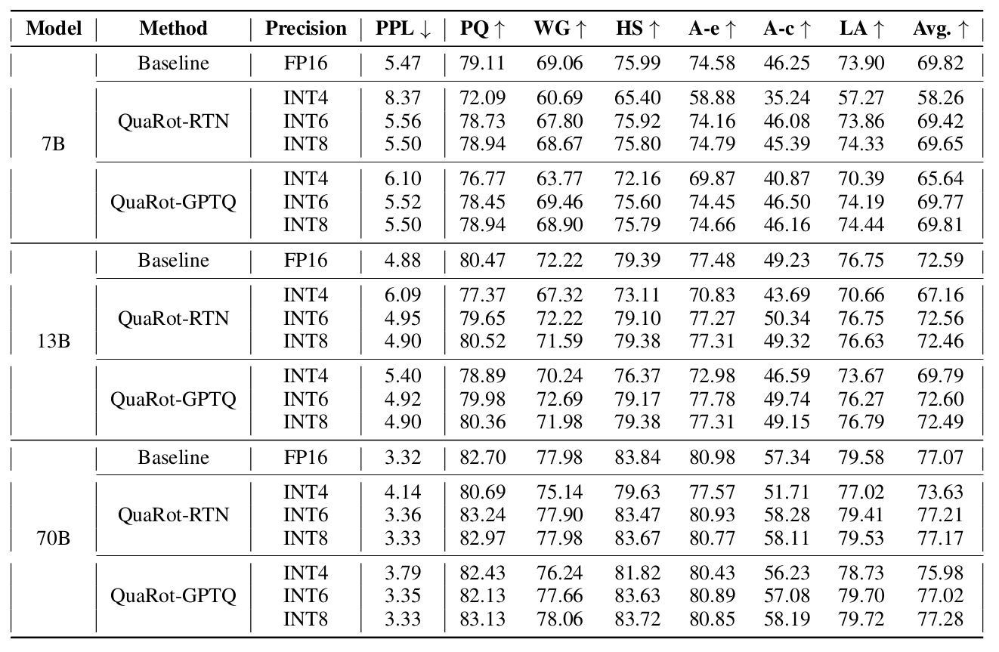
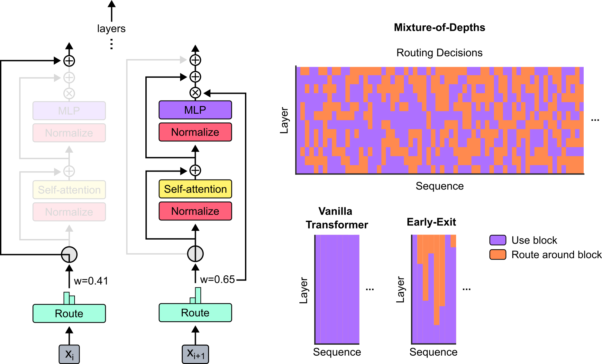
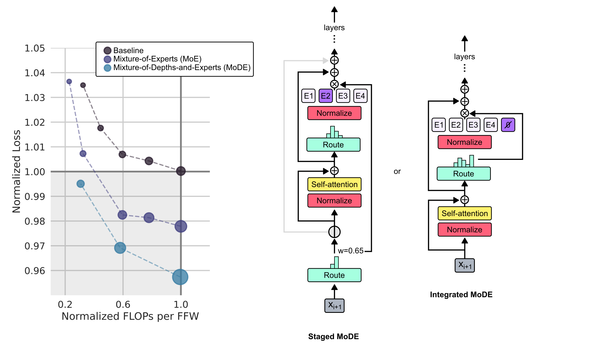

April Papers: TriForce, QuaRot & Mixture-of-Depths
For our April selection of AI research papers, there is a clear common thread: efficient LLM inference. But as it happens, ML researchers are showing there are many creative ways to make our LLMs run faster.
The first paper, TriForce, looks at efficient LLM inference from the angle of combining speculative decoding and sparse KV techniques (which could be for instance our recent Graphcore SparQ method), showing that a combined hierarchical approach speeds up inference compared to standard LLM speculative sampling.
The second highlighted work, QuaRot, is taking a more classic, but loved by Graphcore Research team, quantisation route. It elegantly demonstrates how to use Hadamard transforms to solve the outlier problem in the distribution of LLM activations, opening the door to full (i.e. weights, activations and KV cache) LLM 4-bit quantisation with minimal accuracy loss.
Finally, the last paper, Mixture-of-Depths, presents how LLMs can learn to dynamically and independently allocate FLOPs to tokens, achieving better accuracy for the same compute budget. This research work leverages the routing idea from Mixture-of-Experts (MoE) transformers by allowing the model to decide for each layer which tokens should take a standard route (with the FLOPs cost associated with the layer) or a zero FLOPs skip connection.
We hope you enjoy this month's papers as much as we did! If you have thoughts or questions, please reach out to us at @GCResearchTeam.
TriForce: Lossless Acceleration of Long Sequence Generation with Hierarchical Speculative Decoding
The key idea
A significant bottleneck to efficient LLM inference with long textual sequences is the requirement to load the full key-value (KV) cache from memory at each token-generating step. Recent works have introduced sparse KV access techniques that can speed up the generation process drastically, but can however lead to degradation in the quality of the model output.
The paper combines the sparse KV techniques with speculative decoding: unlike the standard speculative decoding technique where a smaller model is used to draft candidate sequences quickly that are then verified by the full model, this paper proposes using sparse KV access techniques during the drafting stage, thus leading to improved inference speedups without model degradation.

Background
Speculative Decoding
Speculative decoding is a powerful technique for speeding up transformer inference without sacrificing model quality. It builds on the observation that, although token-by-token generation is inherently slow as the full model and the cache need to be loaded from memory at each step, verifying a whole sequence is much faster as each token can be verified in parallel. Speculative decoding thus leverages a small "draft" model to generate a sequence of tokens one-by-one, and then verifies if the sequence would have been generated by the full model, restarting the generation from the diverging token in case of a rejection.
Sparse Attention
During each generative step, only a small part of the full KV cache is usually accessed. Sparse attention techniques leverage this observation by sparsely accessing the KV cache in order to speed up token generation. Various approaches exist, and the authors specifically utilise two:
- StreamingLLM: Retain a recent token window, along with "attention sink" tokens that appear at the beginning of the sequence.
- Retrieval-based: A novel approach introduced in the paper, KV cache is divided into chunks and a representative average key is calculated for each. Attention is then calculated between the current query and the "chunk keys", loading only the chunks corresponding to the highest attention scores.
Their method
There are two main memory bottlenecks during generation: loading the model (dominates for shorter sequences), and loading the KV cache (dominates for longer sequences). In order to tackle both, TriForce uses a hierarchical approach to speculative decoding (see Figure 1):
- A small model using StreamingLLM sparse attention is used as the initial draft model in order to tackle the model-loading bottleneck.
- For the second stage, the original model is used utilising the retrieval-based sparse attention in order to tackle the KV cache-loading bottleneck.
- Finally, the generated sequence is verified by the full model, guaranteeing the correctness of the final output.
Results
Testing the hierarchical approach on Llama 2 model with 128k context window, the authors were able to achieve up to 2.31x speedup on A100 GPU, beating the alternative single-draft approaches (Table 2).

Takeaways
Sparse attention methods offer an attractive approach to tackling long-sequence generation, but can exhibit undesirable model degradation. The paper successfully demonstrates that, in cases where this is too severe, sparse attention methods can be effectively combined with speculative decoding, showcasing significant speedups without a loss in accuracy.
QuaRot: Outlier-Free 4-Bit Inference in Rotated LLMs
The key idea
As large language models (LLMs) are getting increasingly used in many applications, efficient inference (in terms of memory, compute and energy) is a dynamic research field. In this domain, quantisation of models is the predominant technique, as it improves efficiency on all three axes simultaneously: reducing the memory usage for weights and KV cache, and improving compute time (and energy use) by lowering the precision of matrix multiplication.
Nevertheless, one major issue in the LLMs quantisation literature has been how to efficiently handle activation outliers while retaining model accuracy. The QuaRot work presents an elegant way of modifying a pre-trained (frozen) LLM to remove outliers in the distribution of activations, opening the door to accurate and efficient 4-bit weights, activations and KV cache inference.
Background
In LLMs quantisation, weights and activations are not born equal. A large literature initially looked at weights quantisation only, leaving activations and matrix multiplication in 16-bit formats. Quantisation of LLMs activations happens to be more challenging as they display large outliers, contrary to weights. As a consequence, a popular quantisation approach has been to represent activation tensors in 4/8 bits, but also keep track of the set of largest outliers in 16-bit (e.g. LLM.int8, QUIK). While accurate, this type of mixed representation method tends to have sub-optimal compute performance for LLM inference.
Their method
QuaRot aims to tackle the 4-bit quantisation of activations (and KV cache) by modifying the model definition, adding Hadamard transforms to the attention and linear modules, smoothing in this way the distribution of activations and removing outliers.

The Hadamard transforms \(H\) have been popular in a few recent publications, as they present the benefit of random orthogonal matrices for "smoothing" tensor distribution while being very cheap and fast to compute on GPUs (a matrix-vector product \(Hx\) requiring only \(\text{O}(d\,\text{log}(d))\) operations). In short, Walsh-Hadamard transforms are defined recursively by:
and randomized Hadamard can be easily generated by combining the later with a diagonal matrix of random draws in \(\{+1, -1\}\).
As presented in the paper (see figure above), integrating Hadamard transforms to the attention and FFN components removes outliers from the distribution of activations in LLMs such as Llama, improving as a consequence quantisation of these models. Additionally, most of these Hadamard transforms can be directly fused into model weights, or commuted with the RMSNorm, leaving only \(1\tfrac{1}{2}\) per transformer layer to be computed for online LLM inference.

Results
QuaRot shows strong results in terms of accuracy and performance, across different sizes of Llama models (7B, 13B and 70B). Associated with GPTQ, 6-bit and 8-bit QuaRot quantisation matches 16-bit accuracy on multiple benchmarks, while 4-bit quantisation presents only minor accuracy degradation. Additionally, it is shown that the additional Hadamard transforms only have a 7% overhead as they can be efficiently fused with 4-bit GPU GEMM kernels. Interestingly, we note that round-to-nearest (RTN) is matching the more complex GPTQ quantisation technique as models are getting larger.

Mixture-of-Depths: Dynamically allocating compute in transformer-based language models
The key idea
In transformer-based language models, each token takes the same number of FLOPs to generate. However, some tokens may be harder to predict than others, and therefore it would be preferable to dynamically allocate compute across the sequence length. Mixture-of-Depths (MoD) aims to achieve this by capping the number of tokens that can participate in a given transformer layer.

Their method
MoD sets a static compute budget which limits the number of tokens that can participate in a transformer layer's computations (self-attention and MLP). All remaining tokens bypass the block via a residual connection. A routing mechanism is used to determine which path each token takes.
For a layer \(l\) and an input sequence \(\mathbf{X}^l \in \mathbb{R}^{S \times d}\) (where \(S\) is the sequence length and \(d\) is the model dimension), MoD includes trainable parameters \(\mathbf{w}^l \in \mathbb{R}^d\) such that the linear projection \(\mathbf{R}^l = \mathbf{X}_i^l \mathbf{w}^l \in \mathbb{R}^S\) are the router weights for the sequence. The tokens that correspond to the top-\(k\) largest router weights (where \(k\) is based on the compute budget) participate in the layer's computations, with the remaining tokens skipping the block.
The top-\(k\) operation requires knowing the router weights for all tokens, which is not possible when autoregressively sampling such as during LLM inference. The authors provide two strategies to overcome this: the first method introduces an auxiliary loss which trains the routing mechanism to output \(1\) if a token is among the top-\(k\), and \(0\) if not. This approach does affect the primary language modelling objective but allows sampling from the model autoregressively. The second method introduces a second router (whose gradients do not backpropagate through the main model) which predicts whether a token will be among the top-\(k\) or not. This approach does not affect the language modelling objective, nor does it significantly impact the step speed.
Results

The authors compare MoD transformers against vanilla transformers trained on equivalent compute budgets (isoFLOP). The results found that MoD transformers can attain lower losses for a given training budget than their vanilla counterparts (as seen on the left of the Figure above). When comparing the FLOPs per forward pass (seen on the right of the Figure above), MoD transformers can achieve a lower loss while requiring fewer FLOPs (even for larger parameter counts), potentially making MoD a valuable approach for speeding up LLM inference while improving its task performance.

The Mixture-of-Depths approach is inspired by the analogously-named Mixture-of-Experts (MoE), as an alternative approach to conditional compute. As a final investigation, the authors combine both approaches and evaluate Mixture-of-Depths-and-Experts (MoDE), and find that it is able to outperform MoE when comparing the FLOPs per forward pass (as seen in the Figure above).
Takeaways
The Mixture-of-Depths approach unlocks a new way to increase model capacity and capability without incurring the typical compute penalties associated with model scaling. While the focus of the paper has been addressing the practical and algorithmic concerns and challenges, it would be great to see how MoD fares on a variety of downstream tasks, as it is hard to verify how useful this method would be in practice. Nevertheless, this paper is the first of hopefully many papers to come on the topic, and it will be demonstrated as a viable method for training and deploying LLMs in the wild.
Note: formulae have been adapted from the original paper.